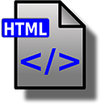

Introduction to HTML
Student Instructions
This assignment is designed to introduce you to HTML and CSS--codes that are used to create Web pages.
The abbreviation HTML stands for Hypertext Markup Language. While many people think it is a programming language, it is simply a formatting code that is applied to text in a file. The file is saved as a Web page, and when a browser opens the file, it reads the HTML code to determine how the text should appear in the browser window when the file is open. While there are other languages--even programming languages like PHP--that can be used to create Web pages, HTML is very widely used as well as easy to learn.
CSS stands for Cascading Style Sheet, and a CSS file is used in conjunction with an HTML file to tell the browser how to format the text in the file. A style sheet is a term that refers to a document that specifies formatting details for text in a document, as a way of defining and standardizing settings in one or more documents. The term cascade simply means that it can apply to multiple files at one time.
When used together, the HTML file contains the content of the page, as well as information about how the different parts of the page are laid out in the browser window. The CSS file contains formatting details like what kinds of fonts the browser should use, as well as colors and borders.
For this assignment, you should create a folder named YourNameHTML. You can create this file in your Student Locker on the university network, on the hard drive of your computer, or on a USB drive.
After creating the folder, download each of the following files and save each file to the YourNameHTML folder.
SAVE each file by right-clicking the link, then selecting Save Target As... in the shortcut menu. Make sure to choose the YourNameHTML folder as the folder where the file is saved, but do not change either of the filenames. If you need help with this process, contact your instructor or a tutor for help.
After you have saved the files to your folder, you are ready to proceed to Part 1.